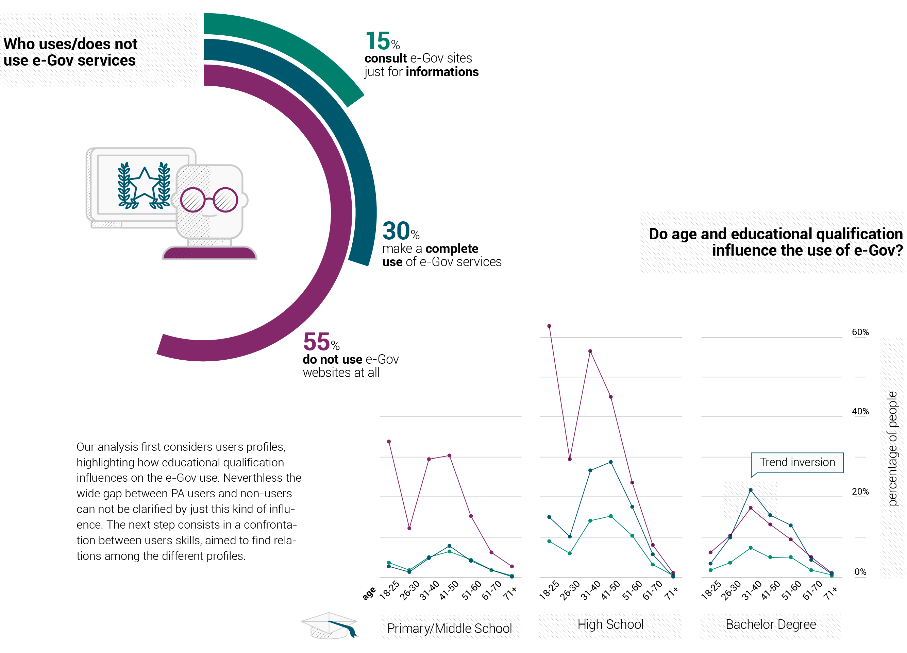
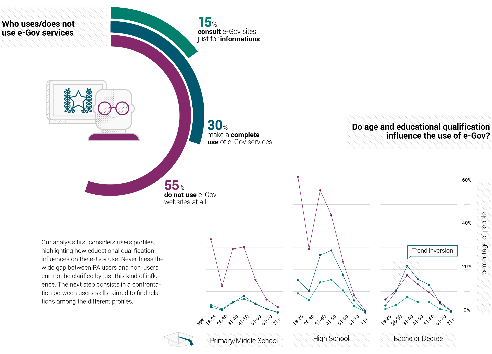

As far as the Global Information Technology Report concerns, Italy occupies the 50th position on 144 countries. Nevertheless, speaking about e-Gov, the country is still underdeveloped. On March 2012 the Government, according to the EU plans, drafted the Agenda Digitale Italiana (Italian Digital Agenda). The plan aims to intervene in different sectors such as e-Government and similar themes concerning information technology in public administration. Such sectors play a fundamental role in the economic growth of the country, and improve the public services quality. The Digital Agenda intends to simplify online procedures building an infrastructure from which both citizens and operators can easily accede to the services.
Making the system efficient and effective leads up not only to a cost cut but also to a growth of information technology and a cultural evolution. Unfortunately, the country is still far from these goals. First of whole the system is fragmented and confused. There are 82 different big systems, 27.000 small systems and a lot of data center scattered in every region. Each municipality has (or has not) its own website and sometimes it is hard for a user to find a service or even a piece of information. Furthermore, while citizens are increasingly evolving towards mobile technologies, most of the public administration digital platforms are still fixed on computers.
 

Nowadays the use of the Internet has highly increased: more than 55% of the Italians connect to the web everyday and 33% periodically during the week. Among the people who do not consult e-Gov websites there is a large number of citizens who only use the internet less than once a week, therefore below the average standard.
The e-Gov mastery is also connected to a wider capability range and a higher number of activities regularly done on the Internet. More than 39% of the people who make a complete use of PA services can perform 5 or 6 tasks on the Internet, even uncommon ones like building a web page. On the other hand, only 18% of people in the lower level of PA use have the same capabilities.
Such capabilities include using a search engine to find information; sending e-mails with attachments; inserting messages in a chat, a newsgroup or a forum; web phoning; using peer to peer to share films and music; creating a web page.
As shown here, average values increase rapidly. 6% of the citizens who do not use e-Gov services are unable to undertake common activities like reading online news or consulting the Internet to learn.
Such activities include finding informations about goods and services; reading and downloading newspapers, news and magazines; finding healthcare information; using bank services; finding information about courses; following an online course; consulting the internet to learn; subscribing to news providing websites.
E-Gov services require an active use of the network. In order to capitalize on these services, it is necessary that the user sign up to gain access to customized data and to be allowed to load modules.
The graph shows that the in-depth use of e-Gov mainly concerns people already accustomed or willing to interact with the web at deeper levels, carrying out activities that require registration, online payments and fulfilling of complex procedures.
The three average user profiles compared do not present a significant discrepancy; this results encourages to direct the research to other subjects. Therefore, the low percentage of use do not depend from cultural or ability gap; it could most likely be ascribed to Italian e-Gov system.
Internet access data highlight how most of the Italian users connect to the web through mobile devices. The Audiweb data of May 2014 show 60% of Internet connections from mobile platforms. In recent years the outburts of connected devices caused a new phenomenon in the digital world: both in Europe and the USA the number of users moving from personal computers to tablets and smartphones has highly increased. As the number of mobile users rises, the number of personal computers lowered: -4,3% in USA and Germany during 2013, even -6% in the UK. Italian contraction is about -2.7% from September 2012 to September 2013.
E-Gov proved to be nearly absent from mobile devices. Only Piemonte, out of twenty regions, offers a site specifically designed for mobile platforms. It is not surprising that Torino is the city that makes the best use of Twitter. Data shown here result from the new research “La PA nel mobile”, presented at Smart City Exhibition 2014 in Bologna.
The e-Gov effort to reach the citizens on their mobile device leads to apps creation. The research has counted 290 app, mostly created in center-north of Italy. These apps offer information (38%), tourism services (27%), citizen services (17%), healthcare services (6%), payment services (3%), partecipation systems (3%). Nevertheless, they lack the ability to reach their real aim. Despite citizens often have the need to connect to and to use e-Gov services, e-Gov remains absent from mobile platforms.
Audiweb joined Nielsen to launch an innovative measuring system capable to reveal electronically the behaviour of the Italian users towards smartphones and tablets. Total Digital Audience has been available in Italy since January 2014.
SOURCES: Istat "Indagine Multiscopo sulle famiglie annuale" | “PA nel mobile” research, presented at Smart City Exhibition 2014 (Bologna Fiere) | Audiweb Database 2012/2013/2014

Work developed during the DesityDesign Course 2014-15